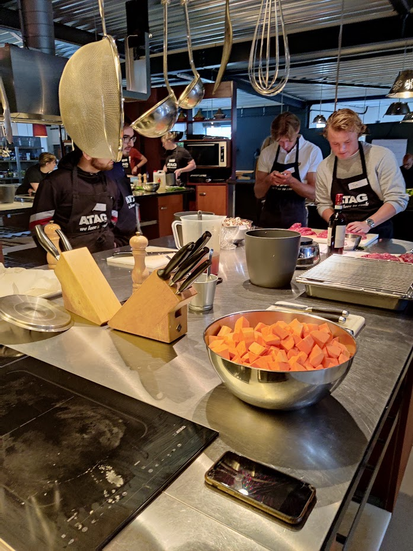
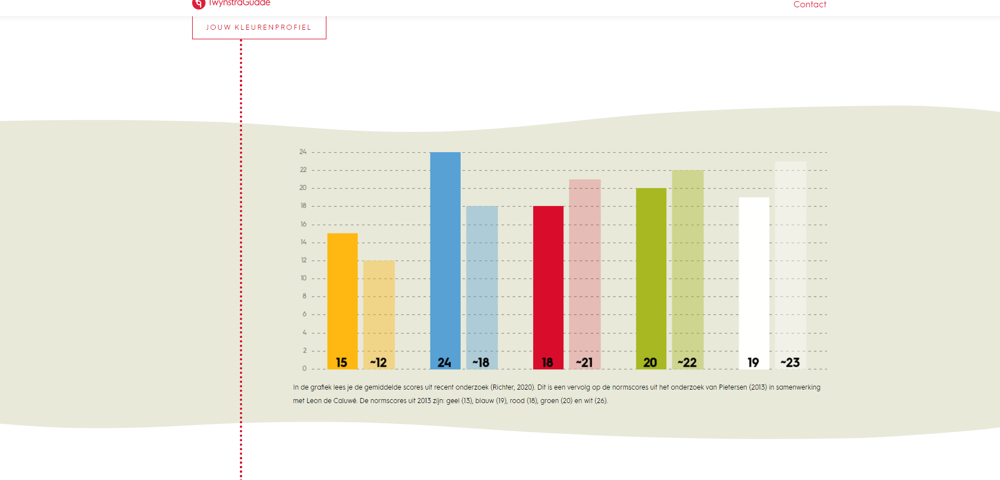

Welkom op de pagina betreffende het vak Smart Me.
Hier moet komen: ontwikkeling op de 6 competenties en eigen leerdoelen.
Mijn leerdoelen zijn:
- Leerdoel 1 (verbreden kennis): Aan het einde van de minor wil ik geleerd hebben om voor een echte opdrachtgever te werken, op ICT gebied, maar ook op bedrijfskundig gebied.
- Leerdoel 2 (overdragen kennis): Tijdens de minor niet ICT-studenten mijn ICT-kennis overdragen zodat zij ICT-gerelateerde onderwerpen begrijpen. Bijvoorbeeld bouwen van website, uitleg over scripts.
Kookworkshop
Tijdens de kookworkshop in Wijchen zijn wij in de eerste weken uitgedaagd om voor een grote groep (onszelf)een 4-gangen diner te koken.
Bij de aftrap van de workshop diende wij groepjes te maken om aan een gang te werken. Dit was voor vele lastig om een groepje te kiezen. Ikzelf heb gekeken naar een groepje met mensen die mij aardig leken.
We kregen namelijk nog uitleg van een chef-kok, na de uitleg kwamen wij tot de conclusie dat wij het hoofdgerecht hadden. Met de ingrediënten in de doos hebben wij het volgende bedacht om te gaan maken namelijk: bavette, zoete aardappelpuree, gefrituurde zoete aardappelschillen etc.
We hebben samen met de andere groepjes een tijdsindeling gemaakt om ervoor te zorgen dat de gerechten op een bepaalde tijd geserveerd zou worden, zoals in een restaurant.
Iemand van ons groepje is naar het bord gegaan en heeft de tijdsindeling gemaakt met de overige groepjes.
Geschilde zoete aardappelen

Brain Hacking
Caluwe kleurentest
De uitkomst van deze test is hieronder te zien:

Aan welke competenties heb ik gewerkt?
Tijdens de lessen van Smart Technology is er gewerkt aan verschillende competenties. Alle competenties van deze minor zijn terug te lezen via
deze link.
Ik heb gewerkt aan de volgende competenties:
- Initiatief en betrokkenheid:
- Aanwezig zijn in de lessen,
- Het uitvoeren van de opdrachten,
- Voortouw nemen voor de presentatie,
- Het stellen van vragen tijdens de lessen.
- Meningen of adviezen zijn gebaseerd op gedegen onderzoek:
- Het advies geven aan medestudenten hoe diegene het beste de Proof of Concept kan opbouwen,
- Het onderzoek doen naar de 3D-printing industrie van vliegtuigbouw en dit presenteren aan de klas.
- Bewust bezig zijn met persoonlijke groei:
- Opfrissen van kennis over IoT-schakelingen door lessen, maar ook door medestudenten,
- Uitleg geven aan niet-ICT'ers,
- Het duidelijk over laten komen van mijn uitleg.
- Andere actief helpen groeien:
- Medestudenten uitleg geven over breadboard en hoe je dit kan inzetten.
- Medestudenten helpen met het programmeren van het plansysteem script,
- Uitleg geven aan medestudenten over de code die zij aan het programmeren zijn.
Onderstaand is in de tabel is een situatiebeschrijving te zien van de eerste les van Smart Connection. Deze situatiebeschrijving is beschreven aan de hand van de STARRT-methode.
(https://meesterschap.wordpress.com/2013/06/09/starrt-methode/)
| Situatie: |
. |
| Taak: |
. |
| Actie: |
. |
| Resultaat: |
. |
| Reflectie: |
. |
| Transfer: |
. |